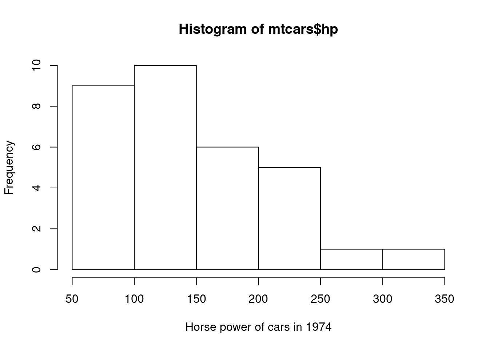
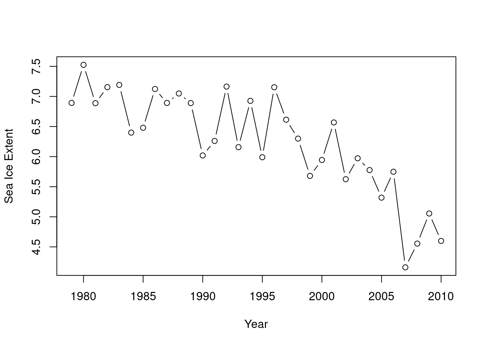
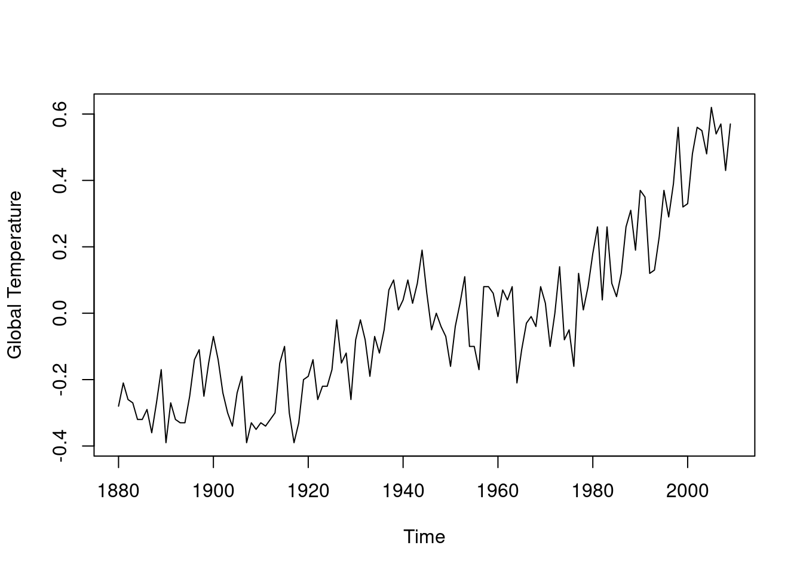
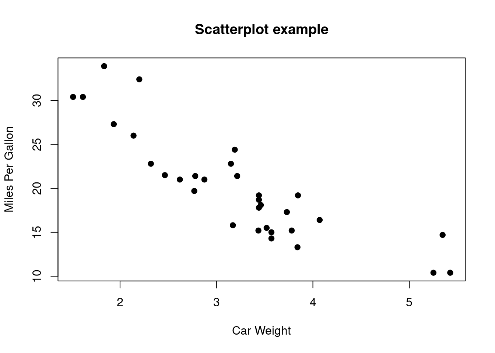

Chapter 1 Revision of Summations and Sampling Distributions and Introduction to R
1.1 Summation
Summation, as the name suggests, is simply the addition of a sequence of numbers. In mathematical notation, we use the Greek summation symbol \(\Sigma\) () for this; the index, usually \(i\) or \(j\), indicates the start and end points in the sequence where the summation should be calculated. For example, for a sequence \(\{x_i\}_{i=1}^{n}= \{x_1, \dots, x_n\}\), if we wanted to calculate \(x_3+x_4+x_5\) it would be \(\sum_{i=3}^5 x_i\).
For sequences \(\{x_i\}_{i=1}^{n}= \{x_1, \dots, x_n\}\) and \(\{y_j\}_{j=1}^{n}=\{y_1,\dots,y_n\}\), some frequently used summations are given below: \[\begin{eqnarray*} \sum_{i=1}^n x_i &=& x_1 + x_2 + \ldots + x_n\\ \sum_{i=1}^n y_i^2 &=& y_1^2 + y_2^2 + \ldots + y_n^2\\ \sum_{i=1}^n x_i y_i &=& x_1 y_1 + x_2 y_2 + \ldots + x_n y_n\\ \sum_{i=1}^n (x_i - \bar{x}) &=& (x_1 - \bar{x}) + (x_2 - \bar{x}) + \ldots + (x_n - \bar{x})\\ \sum_{i=1}^n (x_i - \bar{x})^2 &=& (x_1 - \bar{x})^2 + (x_2 - \bar{x})^2 + \ldots + (x_n - \bar{x})^2 \end{eqnarray*}\]
These types of summations will be used in the first part of the course.
Some properties/tricks
\[\begin{eqnarray*} \sum_{i=1}^{n} a x_i &=& a \sum_{i=1}^{n} x_i \\ \sum_{i=1}^{n} (x_i + a) &=& \left(\sum_{i=1}^{n} x_i\right) + n a \\ \sum_{i=1}^{n} (x_i + y_i) &=& \sum_{i=1}^{n} x_i + \sum_{i=1}^{n} y_i \\ \sum_{i=1}^{n} (x_i - y_i) &=& \sum_{i=1}^{n} x_i - \sum_{i=1}^{n} y_i \\ \sum_{i=1}^{n} i &=& 1 + 2 + 3 + \ldots + (n-2) + (n-1) + n = \frac{n(n+1)}{2} \end{eqnarray*}\]
1.2 Estimates and sampling distributions
An is our best guess at a parameter’s value, based on the data available to us. For example, suppose we assume that \[\left\{ X_{1},X_{2},\ldots,X_{n} \right\}\] are independently distributed \(N(\mu,\sigma^{2})\) random variables. \(\mu\) is a representing a typical value, the mean of the of \(X\)’s we might encounter. \(\sigma^{2}\) is another parameter, representing the variance of the same population.
We can estimate \(\mu\) and \(\sigma^{2}\) in a variety of ways, but, based on a sample of size , the most common estimates used are: \[\hat{\mu} = \bar{x} = \frac{1}{n}\ \sum_{i = 1}^{n}x_{i}\]
and \[{\hat{\sigma}}^{2} = \ s^{2} = \ \frac{1}{n - 1}\sum_{i = 1}^{n}{(x_{i} -\bar{x}})^{2}\]
The hat symbol \(\hat{\phantom{mu}}\) indicates we are calculating an estimate.
Example 1.1 (Estimate example) Suppose we have a sample of 10 observations (\(n = 10\)) from an assumed \(N(\mu,\sigma^{2})\) population, namely:
You should be able to calculate \[\hat{\mu} = \bar{x}= \frac{1}{10}\ \sum_{i = 1}^{10}x_{i} = 1.967\] \[{\hat{\sigma}}^{2} = \ s^{2} = \ \frac{1}{9}\sum_{i = 1}^{10}{(x_{i} -\bar{x}})^{2} = 1.7449\]
So, from this particular sample of 10, we estimate \(\hat{\mu} = 1.967\) and \(\hat{\sigma}^{2} = 1.7449\).If we selected another sample of 10 from the population, we would obtain another, almost certainly different, estimate \(\hat{\mu}\) and another estimate \({\hat{\sigma}}^{2}\). The variation in the value of our estimate from sample to sample is called the of the estimate. If we know the sampling distribution of the estimate, we can use it to build confidence intervals and carry out hypothesis tests on the population parameters.
If \(\left\{ X_{1},X_{2},\ldots,X_{n} \right\}\) are \(N(\mu,\sigma^{2})\) random variables with \(\sigma\) known, then \[\bar{X}= \hat{\mu}\sim N\left(\mu,\ \frac{\sigma^{2}}{n}\right)\]
Note that:
the distribution of \(\hat{\mu}\) has the same mean as the distribution of \(X_{1}\) or \(X_{2}\), but a smaller variance.
the variance of \(\hat{\mu}\) reduces as the sample size \(n\) increases
Hence, \(\bar{X}\) is a better estimate of \(\mu\) than a single observation, e.g. \(X_{1}\) or \(X_{2}\)
A 95% confidence interval for \(\mu\) based on an observed sample \(x=(x_1,\dots,x_n)\) is therefore: \[\bar{x} \pm 1.96\times\frac{\sigma}{\sqrt{n}}\]
If \(\sigma\) is not known, but is estimated using the sample standard deviation, we use the \(t\)-distribution (with \((n - 1) = 9\) degrees of freedom) to build a confidence interval for \(\mu\).
We will use the sampling distributions of estimates of parameters in our analysis later in the unit.
1.2.1 Hypothesis testing
We can use the sampling distribution of an estimate of the parameter of a population to test hypotheses about the parameter. For instance, we can hypothesise that the population mean is
different from a value \(\mu_0\)
greater than a value \(\mu_0\)
smaller from a value \(\mu_0\)
In these cases, the hypotheses we are testing are (respectively):
\(H_0: \mu = \mu_0\) vs. \(H_1: \mu \neq \mu_0\)
\(H_0: \mu = \mu_0\) vs. \(H_1: \mu > \mu_0\)
\(H_0: \mu = \mu_0\) vs. \(H_1: \mu < \mu_0\)
In the first case we carry out a two-tailed test; in the latter two cases we carry out a one-tailed test (right-tailed and left-tailed).
Typically a test is carried out a pre-specified type-I error rate \(\alpha\) (typical values of \(\alpha\) are 0.1, 0.05, 0.01). The pre-specified type-I error rate indicates the level of false positives we are willing to allow in the testing procedures (i.e. tests which reject \(H_0\) when \(H_0\) is actually true).
Alternatively one can compute the p-value corresponding to the observed test-statistic, which gives an indication of the evidence in favour of \(H_0\). The p-value can then be compared with the pre-specified type-I error rate.
If we can assume that the sample mean is Normally distributed, either because the original data is Normally distributed, or our sample size is large enough (say, \(n=30\) or above) AND we know the population standard deviation, then we use the Normal distribution to test the hypotheses.
If we can assume the sample mean is Normally distributed, but we have had to estimate the standard deviation using the sample standard deviation (and we have therefore introduced additional uncertainty into our hypothesis), then we use the t-distribution to test the hypotheses.
Assuming we do not know the population variance, then we would proceed as follows in each of the cases above:
- two-sided test \(H_0: \mu = \mu_0\) vs. \(H_1: \mu \neq \mu_0\).
Since this is a two-sided test, if the test statistic \[ t_{obs} = \frac{(\bar{x} - \mu_0)}{s/\sqrt{n}} > t_{1-\alpha/2, n-1} \quad {or} \quad t_{obs} = \frac{(\bar{x} - \mu_0)}{s/\sqrt{n}} < t_{\alpha/2, n-1}\] then we reject \(H_0\). The p-value of the test can be calculated as: \(p = 2 P(T_{n-1} > |t_{obs}|)\)
- one-sided test \(H_0: \mu = \mu_0\) vs. \(H_1: \mu > \mu_0\).
Since this is a one-sided test, if the test statistic \[ t_{obs} = \frac{(\bar{x} - \mu_0)}{s/\sqrt{n}} > t_{1-\alpha, n-1} \] then we reject \(H_0\). The p-value of the test can be calculated as: \(p = P(T_{n-1} > t_{obs})\)
- one-sided test \(H_0: \mu = \mu_0\) vs. \(H_1: \mu < \mu_0\).
Since this is a one-sided test, if the test statistic \[ t_{obs} = \frac{(\bar{x} - \mu_0)}{s/\sqrt{n}} < t_{\alpha, n-1} \] then we reject \(H_0\). The p-value of the test can be calculated as: \(p = P(T_{n-1} < t_{obs})\)
1.3 Using R
We will use for different sections of this course:
for plotting and visualising data
carrying out repetitive calculations
calculating parameter estimation
using in-built functions and packages to carry out some of the analysis itself.
It is recommended you look over the suggested Introduction to R material on Moodle at the start of the course to reduce the time needed later for producing results for assessed coursework.
1.3.1 R packages
We will predominantly use in-built functions, as well as two add-on packages for the time series section of this course: the astsa package and the tseries package. Some additional packages may be required for specific datasets and methods, such as the forecast package.
Although not needed early in the course, it is suggested you make sure these are installed on your version of so they are ready for when you need them. add-on packages can be installed by:
When you need to use them, load them into your workspace using for example:
1.3.2 Plotting data
Line and scatter plots in particular are useful accompaniments to analysis in this unit, although other types of charts (e.g. histograms) may also be appropriate.
To create a plot in , the plot command is very general command which allows a graph to be drawn with different attributes. We now introduce some useful graphs types in ,.
Histograms
A histogram is one of the most commonly used graphs and is used to illustrate comparisons among categories or the general behaviour (distribution) of data.
# load in-built dataset
data(mtcars)
# plot histogram, with a user-defined x axis label
hist(mtcars$hp, xlab = "Horse power of cars in 1974")
Figure 1.1: An example of a histogram using an in-built dataset using the function.
Line graphs
Line Graphs are mainly used to plot changes in data over time e.g. temperature.
## [1] "Year" "IceExtent"# plot data with "b" -- both points and line
plot(minSeaIce$Year, minSeaIce$IceExtent, xlab = "Year",
ylab = "Sea Ice Extent", type = "b")
library(astsa)
# plot in-built time series data object
data(gtemp)
plot(gtemp, ylab = "Global Temperature")

Figure 1.2: Examples of line graphs with both general data and (time series) objects. Left: arctic sea ice; right: global annual temperature.
Scatter graphs
A scatter graph is useful for plotting the relationship between two different variables.
# load in-built dataset
data(mtcars)
# plot scatter plot, using a different point type
plot(mtcars$wt, mtcars$mpg, main = "Scatterplot example",
xlab = "Car Weight", ylab = "Miles Per Gallon", pch = 19)
Figure 1.3: An example of a scatter plot.
Examples will be given in the first problem class.
1.3.3 Formulae, Data Manipulation and Functions
Calculations in are carried out on data in vector or matrix objects, using assignment, using = or <- (or ->). For example, suppose we wanted to store the sample \((x_1, \ldots ,x_{10}) = (2,5,6,7,1,9,5,1,4,5)\) as the vector x in .
We would do the command
# c() is for "concatenate"
x = c(2, 5, 6, 7, 1, 9, 5, 1, 4, 5)
# same as above (left assignment)
x <- c(2, 5, 6, 7, 1, 9, 5, 1, 4, 5)
# same as above (right assignment)
c(2, 5, 6, 7, 1, 9, 5, 1, 4, 5) -> xVectors and elements
In , we can access elements of vectors and matrices easily:
To refer to a particular entry of
x, we use square brackets. For examplex[3]is the third element ofx, i.e. 6.To refer to a particular entry of the matrix
X, it would beX[3,4]for the \((3,4)th\) entry (third row, fourth column).we can manipulate the vectors directly as objects. For example, if you wanted to calculate the square of \(x_3\), and place the result in a different object
y, you could just writey = x[3]^2. Note that vectors are similarly handled;x^2would be the vector consisting of all of entries in the vectorxbut squared, whereasx[2:4]^2would be the vector \((x_2^2,x_3^2,x_4^2)\).
1.3.4 Functions
There are many functions built-in to . Some useful ones are:
sum(x)calculates the sum of the data in cellsxmean(x)calculates the mean of the data in the vectorxsd(x)calculates the standard deviation of the data points inxcor(x,y)calculates the correlation between two data setsxandy
Other functions are available – see the documentation.